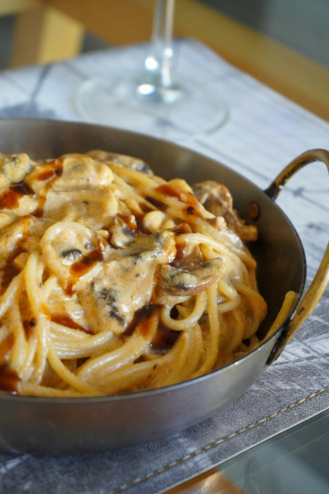

Comfort Food Is More Than Just Food
Comfort food is something we all turn to, often without thinking. Whether it’s a nostalgic dish from childhood or a simple bowl of something warm, these foods have a way of grounding us when life feels overwhelming. They remind us that even in chaos, there’s a small pocket of familiarity and warmth.
More than taste, comfort food is wrapped in emotion. It brings with it memories, stories, and moments of connection that linger in the background of our minds. When we reach for comfort food, we’re not just hungry — we’re searching for stability, reassurance, and a feeling of being cared for, even if it's coming from our own hands.
The Psychology Behind Comfort Food

Comfort food has a direct connection to emotional regulation. When we eat something familiar during stressful times, our brain associates the flavors with safety and past experiences of comfort. This emotional link activates dopamine pathways, helping us relax almost instantly. It's the body’s way of saying, “You’re safe here.” Over time, these foods become emotional shortcuts, giving us quick access to feelings of warmth and reassurance. This is why certain meals instantly calm us, even if we haven’t eaten them in years. They act as emotional stabilizers during moments of overwhelm. In many ways, comfort food becomes a subconscious coping mechanism that helps us navigate the ups and downs of daily life.
Psychologists believe that comfort foods act like emotional anchors. They remind us of moments where we felt loved, supported, or at peace. Whether it’s your mother’s soup or the noodles you ate during study nights, the memories attached to those dishes amplify their soothing effect. In that sense, comfort food is an emotional time machine.
Comfort Food Across Cultures
Every culture has its own comfort food staples, each shaped by geography, tradition, and community. In Japan, it might be a bowl of miso soup shared at the end of a long day. In Mexico, it could be hot tamales wrapped warmly in corn husks. In India, families often turn to simple khichdi, a dish that represents warmth and healing. These foods are deeply tied to identity and heritage, becoming symbols of cultural belonging. They reflect generations of shared rituals, celebrations, and everyday moments. Even when people move to new places, these dishes travel with them, offering familiarity in unfamiliar surroundings. This is why comfort food often becomes a bridge between our past and present.
Although the flavors differ, the purpose remains consistent. These foods represent home — not necessarily a place, but a state of emotional security. Comfort food is universal, transcending culture, age, and background. Despite differences, we are united by the need for nourishment that extends beyond the plate.
Why We Crave Specific Flavors
The flavors you crave during difficult times aren’t random. Salt, sugar, and fat have strong connections to the brain’s reward system, offering temporary relief from stress. Sweet items release dopamine, salty foods satisfy mineral cravings, and fatty dishes offer a sense of fullness and warmth that feels grounding.
Sometimes, cravings are tied to memories rather than flavor. A certain dish might remind you of celebrations, lazy weekends, or someone special who made it for you. These emotional associations make even the simplest foods feel like a hug. When life feels unpredictable, our bodies instinctively seek out these little sources of stability.
The Science Behind Comfort Eating
Biologically, comfort eating is closely tied to stress. When the body produces cortisol, it increases appetite while reducing your ability to regulate cravings. This is why stressful days often end with a sudden desire for carbs or something rich. It’s your body’s way of self-soothing through food. Research also shows that warm and hearty meals activate the parasympathetic nervous system, signaling the body to relax. This calming effect helps lower tension and anxiety, even if only temporarily. The ritual of eating something warm provides a sense of grounding that the brain interprets as safety. This is why comfort food becomes such an instinctive response during emotional lows.
Carbohydrates also boost serotonin, the neurotransmitter responsible for mood balance and happiness. This is why warm bread, pasta, or rice dishes feel particularly calming. In a biological sense, comfort food temporarily restores a sense of emotional balance — and that’s perfectly human.
Modern Comfort Food in 2025
Comfort food has evolved significantly in recent years. While classic dishes still dominate, people are increasingly turning to healthier alternatives like baked versions of fried favorites, plant-based takes on nostalgic meals, and fusion bowls that combine flavors from around the world. Comfort is no longer tied to a single flavor — it’s becoming more flexible and creative.
With busy schedules, comfort food is also becoming more convenient. Meal kits, pre-prepped ingredients, and simplified recipes help people enjoy soothing dishes without spending hours in the kitchen. And in a digital world, online food communities have made sharing comfort food stories more meaningful than ever.
The Power of Nostalgia

Nostalgia plays a massive role in what becomes comfort food. A dish doesn’t have to be fancy or complicated — sometimes it’s the simplest meals that carry the strongest memories. Whether it’s the smell of something your grandmother cooked or a snack from your childhood, these foods become emotional bookmarks. They act as reminders of people we love, moments we cherish, and times when life felt simpler. Nostalgic foods often show up during transitions or stressful moments because they help restore a sense of identity. In a world that changes constantly, these familiar flavors bring us back to places and versions of ourselves we don’t want to lose. They offer emotional grounding in ways words sometimes cannot.
Nostalgic comfort foods offer familiarity in a rapidly changing world. They remind us of who we were, where we came from, and the little routines that shaped us. In a way, comfort food helps us stay connected to our identity, even as life moves forward.
The Social Side of Comfort Food
Comfort food becomes even more meaningful when shared. Eating with friends or family enhances the emotional experience, making each bite feel more satisfying. A cozy meal after a hard week, late-night takeout with your best friend, or a celebratory dish cooked together — these shared experiences transform simple meals into cherished memories.
Food brings people together, helping them bond over flavors, traditions, and stories. Comfort food, especially, carries emotional weight because it symbolizes care and connection. When shared, it becomes an act of love.
Closing Thoughts
Comfort food is deeply personal, rooted in memory, emotion, and biology. It's the warmth we seek when our minds feel heavy and the familiarity we crave when the world feels chaotic. No matter where you’re from, there is always that one dish that feels like home — and that itself is a beautiful part of being human.
In the end, comfort food isn’t really about the ingredients. It’s about the stories, the people, and the moments attached to it. It reminds us that healing can sometimes be as simple as sitting down with a warm plate of something we love.